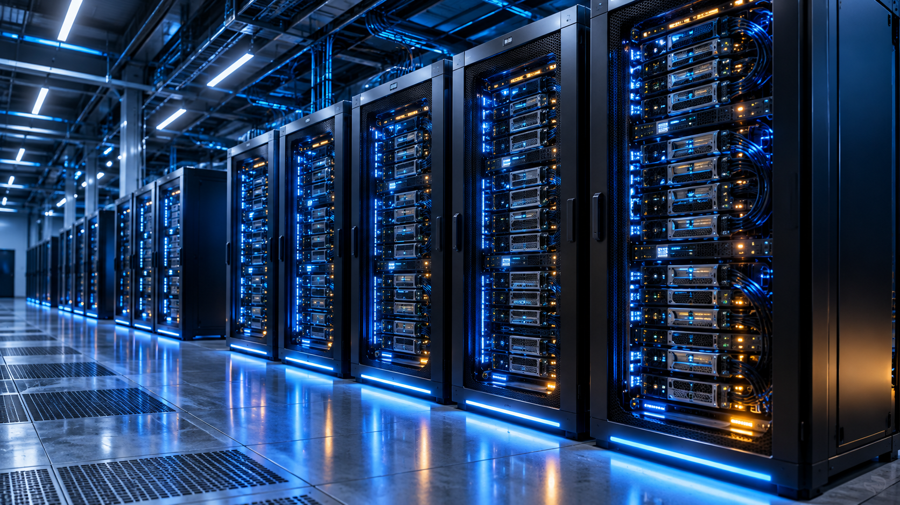
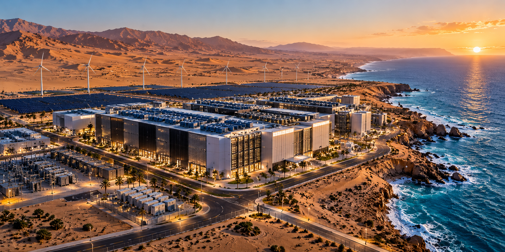
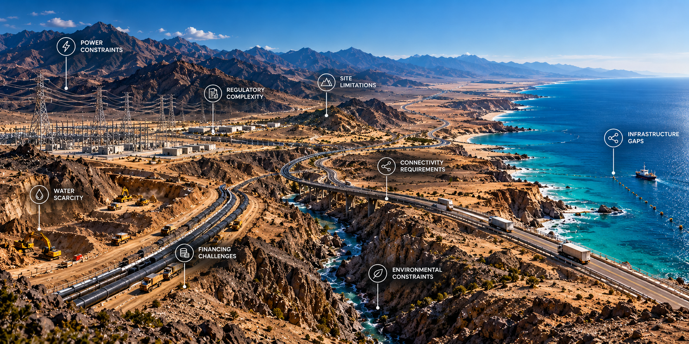
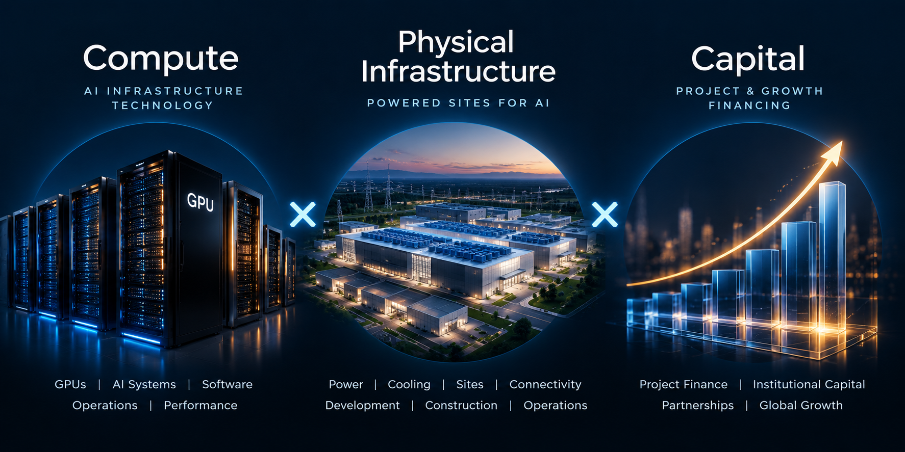

Technology
Translate workload and compute requirements into the architecture, platforms and technology partnerships required for each project.


AI infrastructure cannot be copied from one market to another. Climate, water, energy resources, geography and regulation change the engineering equation. Itrino treats those conditions as design inputs—not obstacles.
By adapting power, cooling, site architecture and operating models to each location, we seek to convert local constraints and natural advantages into more resilient, efficient and scalable infrastructure.

AI infrastructure projects can stall when technology, power, sites, cooling, connectivity, financing, regulation and local execution do not align. Itrino is built to get them moving.
Whether you are a government advancing an AI infrastructure strategy, a technology or infrastructure company entering a new market, or an investor looking for executable opportunities, Itrino identifies the constraints, assembles the capabilities required to solve them, and drives the path toward deployment.
Bring us the goal. Bring us the obstacles. We build the path forward.

The opportunity is created when these systems work together. Itrino coordinates the interfaces between them—turning technology requirements, physical resources and investment into operating capacity that can be financed, deployed and operated.
AI capacity depends on an interconnected physical system. A constraint in any one layer can delay the entire deployment. Itrino brings the system together.
Translate workload and compute requirements into the architecture, platforms and technology partnerships required for each project.
Develop the physical conditions AI requires: power, high-density cooling, water strategy, connectivity, sites, resilience and supporting infrastructure.
Assemble capital and delivery partners, advance projects through deployment, and establish local operating capability for long-term performance.
AI cloud, accelerator infrastructure, dedicated clusters and technology platforms aligned with workload requirements.
Grid capacity, generation, renewables, storage and resilient electrical systems for high-density AI loads.
High-density thermal architecture adapted to climate, water availability, efficiency and compute environments.
Resilient networks connecting facilities to customers, cloud ecosystems and global data routes.
AI-ready sites, data centers and physical infrastructure developed around power, compute and expansion requirements.
Development capital, project equity, infrastructure investment and financing aligned with project economics.
Itrino coordinates the technical, physical, financial and local workstreams required to move an opportunity into operation.
Markets · Demand · Sites · Power
Compute · Power · Cooling · Connectivity
Partners · Capital · Customers · Economics
Engineering · Approvals · Financing · Delivery
Infrastructure · Compute · Commissioning
Operations · Performance · Expansion
Enter new markets and secure infrastructure capacity without building every local development capability internally.
Develop domestic AI capacity, sovereign infrastructure and long-term technical and operating capability.
Create dedicated, resilient and secure infrastructure for high-value AI and high-performance computing workloads.
Access developed opportunities where technology, customers, infrastructure and execution are aligned.
Convert power, land, connectivity and infrastructure advantages into deployable AI capacity.
Deploy platforms through projects designed around real local operating and market requirements.
Itrino assembles the right combination of technology, infrastructure, capital and operating partners for each opportunity—and coordinates them around a common deployment plan.
Technology: AI and cloud operators, accelerator and equipment providers, software and platform partners.
Infrastructure: energy, engineering and EPC, cooling, connectivity, facilities and operations partners.
Capital & markets: infrastructure investors, strategic capital, institutions, customers and local ecosystems.
Whether you bring compute demand, technology, power, a site, capital or a market opportunity, Itrino can help turn those components into deployable infrastructure.